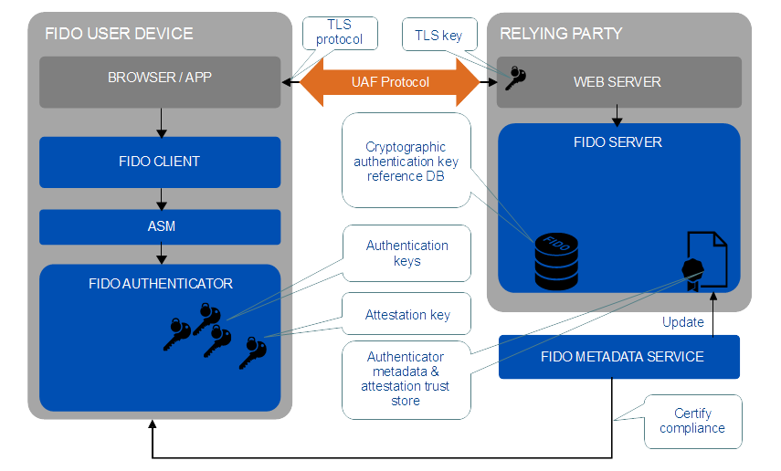
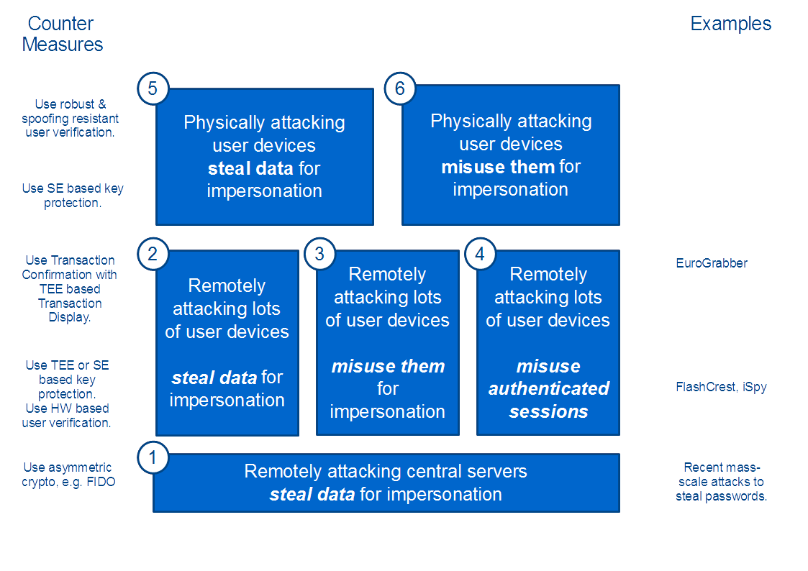

This document analyzes the FIDO security. The analysis is performed on the basis of the FIDO
Universal Authentication Framework (UAF) specification and FIDO Universal 2nd Factor (U2F)
specifications as of the date of this publication.
Status of This Document
This section describes the status of this document at the time of its publication.
Other documents may supersede this document. A list of current FIDO Alliance publications and the
latest revision of this technical report can be found in the FIDO Alliance specifications index at
https://www.fidoalliance.org/specifications/.
This document was published by the FIDO Alliance as a Proposed Standard.
If you wish to make comments regarding this document, please
Contact Us.
All comments are welcome.
Implementation of certain elements of this Specification may require licenses under third party intellectual
property rights, including without limitation, patent rights. The FIDO Alliance, Inc. and its Members
and any other contributors to the Specification are not, and shall not be held, responsible in any manner
for identifying or failing to identify any or all such third party intellectual property rights.
THIS FIDO ALLIANCE SPECIFICATION IS PROVIDED “AS IS” AND WITHOUT ANY
WARRANTY OF ANY KIND, INCLUDING, WITHOUT LIMITATION, ANY EXPRESS OR IMPLIED
WARRANTY OF NON-INFRINGEMENT, MERCHANTABILITY OR FITNESS FOR A
PARTICULAR PURPOSE.
This document has been reviewed by FIDO Aliance Members
and is endorsed as a Proposed Standard.
It is a stable document and may be used as reference material or cited from another
document. FIDO Alliance's role in making the Recommendation is to draw attention to the
specification and to promote its widespread deployment.
Type names, attribute names and element names are written as code.
String literals are enclosed in “”, e.g. “UAF-TLV”.
In formulas we use “|” to denote byte wise concatenation
operations.
UAF specific terminology used in this document is defined in
[FIDOGlossary].
1.1 Key Words
The key words “MUST”, “MUST NOT”, “REQUIRED”, “SHALL”, “SHALL
NOT”, “SHOULD”, “SHOULD NOT”, “RECOMMENDED”, “MAY”, and
“OPTIONAL” in this document are to be interpreted as
described in [RFC2119].
2. Introduction
This document analyzes the security properties of the FIDO UAF and U2F families of
protocols. Although a brief architectural summary is provided below, readers should familiarize
themselves with the the FIDO Glossary of Terms [FIDOGlossary] for definitions
of terms used throughout. For technical details of various aspects of the architecture,
readers should refer to the FIDO Alliance specifications in the Bibliography.

Fig. 1FIDO Reference Architecture
Conceptually, FIDO involves a conversation between a computing environment controlled
by a Relying Party and one controlled by the user to be authenticated.
The Relying Party's environment consists conceptually of at least a web server and the
server-side portions of a web application, plus a FIDO Server.
The FIDO Server has a trust store, containing the (public) trust anchors for the attestation
of FIDO Authenticators.
The user's environment, referred to as the FIDO user device, consists of one or more
FIDO Authenticators, a piece of software called the FIDO Client that is the endpoint for
UAF and U2F conversations, and User Agent software. The User Agent software may
be a browser hosting a web application delivered by the Relying Party, or it may be a
standalone application delivered by the Relying Party. In either case, the FIDO Client,
while a conceptually distinct entity, may actually be implemented in whole or part within
the boundaries of the User Agent.
2.1 Intended Audience
This document assumes a technical audience that is proficient with security analysis of
computing systems and network protocols as well as the specifics of the FIDO architecture
and protocol families. It discusses the security goals, security measures, security
assumptions and a series of threats to FIDO systems, including the user's computing
environment, the Relying Party's computing environment, and the supply chain, including
the vendors of FIDO components.
3. Attack Classification
We want to distinguish the following threat classes (all leading to the impersonation of the user):
Automated attacks focused on relying parties, which affect the user but cannot be prevented by the user
Automated attacks which are performed once and lead to the ability to impersonate the user on an on-going basis without involving him or his device directly.
Automated attacks which involve the user or his device for each successful impersonation.
Automated attacks to sessions authenticated by the user.
Not automatable attacks to the user or his device which are performed once and lead to the ability to impersonate the user on an on-going basis without involving him or his device directly.
Not automatable attacks to the user or his device which involve the user or his device for each successful impersonation.

Fig. 2Attack Classes
The first four attack classes are considered scalable as they are automated (or at least can be automated).
The attack classes 5 and 6 are not automatable; they involve some kind of manual/physical interaction of the attacker with the user or his device.
We will attribute the threats analyzed in this document with the related attack class (AC1 – AC6).
Note
FIDO UAF uses asymmetric cryptography to protect against this class of attacks. This gives control back to the user, i.e. when using good random numbers, the user’s authenticator can make breaking the key as hard as the underlying factoring (in the case of RSA) or discrete logarithm (in the case of DSA or ECDSA) problem.
Once counter-measures for this kind of attack are commonly in place, attackers will likely focus on another attack class.
The numbers at the attack classes do not imply a feasibility ranking of the related attacks, e.g. it is not necessarily more difficult to perform (4) than it is to perform (3).
Feasibility of attack class (1) cannot be influenced by the user at all. This makes this attack class really bad.
The concept of physical security (i.e. “protect your Authenticator from being stolen”), related to attack classes (5) and (6) is much better internalized by users than the concept of logical security, related to attack classes (2), (3) and (4).
In order to protect against misuse of authenticated sessions (e.g. MITB attacks), the FIDO Authenticator must support the concept of transaction confirmation and the relying party must use it.
For an attacker to succeed, any attack class is sufficient.
4. UAF Security Goals
In this section the specific security goals of UAF are described.
The FIDO UAF protocol [UAFProtocol] supports a variety of different FIDO Authenticators. Even though the
security of those authenticators varies, the UAF protocol and the FIDO Server should
provide a very high level of security - at least on a conceptual level. In reality it might require
a FIDO Authenticator with a high security level in order to fully leverage the UAF
security strength.
Note
In certain environments the overall security of the
explicit authentication (as provided by FIDO) is less important, as it
might be supplemented with a high degree of implicit authentication or
the application doesn’t even require a high
level of authentication strength.
The FIDO U2F protocol [U2FOverview] supports a more constrained set of Authenticator capabilities. It
shares the same security goals as UAF, with the exception of [SG-14] Transaction Non-
Repudiation.
The UAF protocol has the following security goals:
[SG-1]
Strong User Authentication: Authenticate (i.e. recognize) a user and/or a device
to a relying party with high (cryptographic) strength.
[SG-2]
Credential Guessing Resilience: Provide robust protection against eavesdroppers,
e.g. be resilient to physical observation, resilient to targeted impersonation, resilient
to throttled and unthrottled guessing.
[SG-3]
Credential Disclosure Resilience: Be resilient to phishing attacks and real-time
phishing attack, including resilience to online attacks by adversaries able to actively manipulate
network traffic.
[SG-4]
Unlinkablity: Protect the protocol conversation such that any two relying parties
cannot link the conversation to one user (i.e. be unlinkable).
[SG-5]
Verifier Leak Resilience: Be resilient to leaks from other relying parties. I.e.,
nothing that a verifier could possibly leak can help an attacker impersonate the user to
another relying party.
[SG-6]
Authenticator Leak Resilience: Be resilient to leaks from other FIDO Authenticators.
I.e., nothing that a particular FIDO Authenticator could possibly leak can help an
attacker to impersonate any other user to any relying party.
[SG-7]
User Consent: Notify the user before a relationship to a new relying party is being
established (requiring explicit consent).
[SG-8]
Limited PII: Limit the amount of personal identifiable information (PII) exposed
to the relying party to the absolute minimum.
[SG-9]
Attestable Properties: Relying Party must be able to verify FIDO Authenticator
model/type (in order to calculate the associated risk).
[SG-10]
DoS Resistance: Be resilient to Denial of Service Attacks. I.e. prevent attackers
from inserting invalid registration information for a legitimate user for the next login
phase. Afterward, the legitimate user will not be able to login successfully anymore.
[SG-11]
Forgery Resistance: Be resilient to Forgery Attacks (Impersonation Attacks).
I.e. prevent attackers from attempting to modify intercepted communications in order to
masquerade as the legitimate user and login to the system.
[SG-12]
Parallel Session Resistance: Be resilient to Parallel Session Attacks. Without
knowing a user’s authentication credential, an attacker can masquerade as the legitimate
user by creating a valid authentication message out of some eavesdropped communication
between the user and the server.
[SG-13]
Forwarding Resistance: Be resilient to Forwarding and Replay Attacks. Having
intercepted previous communications, an attacker can impersonate the legal user to
authenticate to the system. The attacker can replay or forward the intercepted messages.
[SG-14]
Transaction Non-Repudiation: Provide strong cryptographic non-repudiation
for secure transactions.
[SG-15]
Respect for Operating Environment Security Boundaries: Ensure that registrations
and key material as a shared system resource is appropriately protected according
to the operating environment privilege boundaries in place on the FIDO user device.
Independent of any particular implementation, the UAF protocol assumes some assets
to be present and to be protected.
Cryptographic Authentication Key. Typically keys in FIDO are unique for each tuple
of (relying party, user account, authenticator).
Cryptographic Authentication Key Reference. This is the cryptographic material
stored at the relying party and used to uniquely verify the Cryptographic Authentication
Key, typically the public portion of an asymmetric key pair.
Authenticator Attestation Key(as stored in each authenticator). This should only
be usable to attest a Cryptographic Authentication Key and the type and manufacturing
batch of an Authenticator. Attestation keys and certificates are shared
by a large number of authenticators in a device class from a given vendor in order
to prevent their becoming a linkable identifier across relying parties. Authenticator
attestation certificates may be self-signed, or signed by an authority key
controlled by the vendor.
Authenticator Attestation Authority Key. An authenticator vendor may elect to
sign authenticator attestation certificates with a per-vendor certificate authority
key.
Authenticator Attestation Authority Certificate. Contained in the initial/default trust
store as part of the FIDO Server and contained in the active trust store maintained
by each relying party.
Active Trust Store. Contains all trusted attestation master certificates for a given
FIDO server.
All data items suitable for uniquely identifying the authenticator across relying
parties. An attack on those would break the non-linkability security goal.
Private key of Relying Party TLS server certificate.
TLS root certificate trust store for the user's browser/app.
5. FIDO Security Measures
Note
Particular implementations of FIDO Clients, Authenticators, Servers and participating
applications may not implement all of these security measures (e.g. Secure Display,
[SM-10] Transaction Confirmation) and they also might (and should) implement
add itional security measures.
Note
The U2F protocol lacks support for [SM-5] Secure Display, [SM-10] Transaction Confirmation,
has only server-supplied [SM-8] Protocol Nonces, and [SM-3] Authenticator
Class Attestation is implicit as there is only a single class of device.
[SM-1] (U2F + UAF)
Key Protection: Authentication key is protected against misuse. User unlocks
cryptographic authentication key stored in FIDO Authenticator (Except silent authenticators).
[SM-2] (U2F + UAF)
Unique Authentication Keys: Cryptographic authentication key is specific and
unique to the tuple of (FIDO Authenticator, User, Relying Party).
[SM-3] (U2F + UAF)
Authenticator Class Attestation: Hardware-based FIDO Authenticators support
authenticator attestation using a shared attestation certificate. Each relying party
receives regular updates of the trust store (through attestation service).
[SM-4] (UAF)
Authenticator Status Checking: Relying Parties will be notified of compromised
authenticators or authenticator attestation keys. The FIDO Server must take this
information into account. Authenticator manufacturers have to inform FIDO alliance
about compromised authenticators.
[SM-5] (UAF)
User Consent: FIDO Client implements a user interface for getting user’s consent
on any actions (except authentication with silent authenticator) and displaying RP
name (derived from server URL).
[SM-6] (U2F + UAF)
Cryptographically Secure Verifier Database: The relying party stores only the
public portion of an asymmetric key pair, or an encrypted key handle, as a cryptographic
authentication key reference.
[SM-7] (U2F + UAF)
Secure Channel with Server Authentication: The TLS protocol with server authentication
or a transport with equivalent properties is used as transport protocol for
UAF. The use of https is enforced by a browser or Relying Party application.
[SM-8] (UAF)
Protocol Nonces: Both server and client supplied nonces are used for UAF registration
and authentication. U2F requires server supplied nonces.
[SM-9] (U2F + UAF)
Authenticator Certification: Only Authenticators meeting certification requirements
defined by the FIDO Alliance and accurately describing their relevant characteristics
will have have their related attestation keys included in the default Trust Store.
[SM-10] (UAF)
Transaction Confirmation (WYSIWYS): Secure Display (WYSIWYS) (optionally)
implemented by the FIDO Authenticators is used by FIDO Client for displaying relying
party name and transaction data to be confirmed by the user.
[SM-11] (U2F + UAF)
Round Trip Integrity: FIDO server verifies that the transaction data related to
the server challenge received in the UAF message from the FIDO client is identical to
the transaction data and server challenge delivered as part of the UAF request message.
[SM-12] (U2F + UAF)
Channel Binding: Relying Party servers may verify the continuity of a secure
channel with a client application.
[SM-13] (UAF)
Key Handle Access Token: Authenticators not intended to roam between untrusted
systems are able to constrain the use of registration keys within the privilege
boundaries defined by the operating environment of the user device. (per-user, or perapplication,
or per-user + per-application as appropriate)
[SM-14] (U2F + UAF)
Trusted Facet List: A Relying Party can declare the application identities allowed
to access its registered keys, for operating environments on user devices that
support this concept.
[SM-15] (U2F + UAF)
Signature Counter: Authenticators send a monotonically increasing signature counter
that a Relying Party can check to possibly detect cloned authenticators.
5.1 Relation between Measures and Goals
Security Goal
Supporting Security Measures
[SG-1] Strong User Authentication
[SM-1] Key Protection
[SM-12] Channel Binding
[SM-14] Trusted Facet List
[SM-15] Signature Counter
[SG-2] Credential Guessing Resilience
[SM-1] Key Protection
[SM-6] Cryptographically Secure Verifier Database
[SG-3] Credential Disclosure Resilience
[SM-1] Key Protection
[SM-9] Authenticator Certification
[SM-15] Signature Counter
[SG-4] Unlinkability
[SM-2] Unique Authentication Keys
[SM-3] Authenticator Class Attestation
[SG-5] Verifier Leak Resilience
[SM-2] Unique Authentication Keys
[SM-6] Cryptographically Secure Verifier Database
[SG-6] Authenticator Leak Resilience
[SM-9] Authenticator Certification
[SM-15] Signature Counter
[SG-7] User Consent
[SM-1] Key Protection
[SM-5] User Consent
[SM-7] Secure Channel with Server Authentication
[SM-10] Transaction Confirmation (WYSIWYS)
[SG-8] Limited PII
[SM-2] Unique Authentication Keys
[SG-9] Attestable Properties
[SM-3] Authenticator Class Attestation
[SM-4] Authenticator Status Checking
[SM-9] Authenticator Certification
[SG-10] DoS Resistance
[SM-8] Protocol Nonces
[SG-11] Forgery Resistance
[SM-7] Secure Channel with Server Authentication
[SM-8] Protocol Nonces
[SM-11] Round Trip Integrity
[SM-12] Channel Binding
[SG-12] Parallel Session Resistance
[SM-7] Secure Channel with Server Authentication
[SM-8] Protocol Nonces
[SM-11] Round Trip Integrity
[SM-12] Channel Binding
[SG-13] Forwarding Resistance
[SM-7] Secure Channel with Server Authentication
[SM-8] Protocol Nonces
[SM-11] Round Trip Integrity
[SM-12] Channel Binding
[SG-14] Transaction Non-Repudiation
[SM-1] Key Protection
[SM-2] Unique Authentication Keys
[SM-8] Protocol Nonces
[SM-9] Authenticator Certification
[SM-10] Transaction Confirmation (WYSIWYS)
[SM-11] Round Trip Integrity
[SM-12] Channel Binding
[SG-15] Respect for Operating Environment Security Boundaries
[SM-13] Key Handle Access Token
[SM-14] Trusted Facet List
6. UAF Security Assumptions
Today’s computer systems and cryptographic algorithms are not provably secure. In this
section we list the security assumptions, i.e. assumptions on security provided by other
components. A violation of any of these assumptions will prevent reliable achievement
of the Security Goals.
[SA-1]
The cryptographic algorithms and parameters (key size, mode, output length,
etc.) in use are not subject to unknown weaknesses that make them unfit for their purpose
in encrypting, digitally signing, and authenticating messages.
[SA-2]
Operating system privilege separation mechanisms relied up on by the software
modules involved in a FIDO operation on the user device perform as advertised. E.g.
boundaries between user and kernel mode, between user accounts, and between applications
(where applicable) are securely enforced and security principals can be mutually,
securely identifiable.
[SA-3]
Applications on the user device are able to establish secure channels that provide
trustworthy server authentication, and confidentiality and integrity for messages
(e.g., through TLS).
[SA-4]
The secure display implementation is protected against spoofing and tampering.
[SA-5]
The computing environment on the FIDO user device and the and applications
involved in a FIDO operation act as trustworthy agents of the user.
[SA-6]
The inherent value of a cryptographic key resides in the confidence it imparts,
and this commodity decays with the passage of time, irrespective of any compromise
event. As a result the effective assurance level of authenticators will be reduced over
time.
[SA-7]
The computing resources at the Relying Party involved in processing a FIDO operation
act as trustworthy agents of the Relying Party.
6.1 Discussion
With regard to [SA-5] and malicious computation on the FIDO user's device, only very
limited guarantees can be made within the scope of these assumptions. Malicious code
privileged at the level of the trusted computing base can always violate [SA-2] and [SA-
3]. Malicious code privileged at the level of the user's account in traditional multi-user
environments will also likely be able to violate [SA-3].
FIDO can also provide only limited protections when a user chooses to deliberately violate
[SA-5], e.g. by roaming a USB authenticator to an untrusted system like a kiosk, or
by granting permissions to access all authentication keys to a malicious app in a mobile
environment. Transaction Confirmation can be used as a method to protect against compromised
FIDO user devices.
In to components such as the FIDO Client, Server, Authenticators and the mix of software
and hardware modules they are comprised of, the end-to-end security goals also
depend on correct implementation and adherence to FIDO security guidance by other
participating components, including web browsers and relying party applications. Some
configurations and uses may not be able to meet all security goals. For example, authenticators
may lack a secure display, they may be composed only of unattestable software
components, they may be deliberately designed to roam between untrusted operating
environments, and some operating environments may not provide all necessary
security primitives (e.g., secure IPC, application isolation, modern TLS implementations,
etc.)
The user registers a FIDO authentication key with a fraudulent
web site instead of the genuine Relying Party.
Consequences:
The fraudulent site may convince the user to disclose a set of non-FIDO credentials
sufficient to allow the attacker to register a FIDO Authenticator under its own
control, at the genuine Relying Party, on the user's behalf, violating [SG-1]
Strong User Authentication.
Mitigations:
Disclosure of non-FIDO credentials is outside of the scope of the FIDO security
measures, but Relying Parties should be aware that the initial strength of an authentication
key is no better than the identity-proofing applied as part of the registration
process.
SG-1
7.1.2 Threats to the User Device, FIDO Client and Relying Party Client Applications
T-1.2.1
FIDO Client Corrpution
Violates
AC3
Attacker gains ability to execute code in the security context of the FIDO Client.
Consequences: Violation of [SA-5].
Mitigations: When the operating environment on the FIDO user device allows, the FIDO
Client should operate in a privileged and isolated context under [SA-2] to protect
itself from malicious modification by anything outside of the Trusted Computing
Base.
SA-5
T-1.2.2
Logical/Physical User Device Attack
Violates
AC3 / AC5
Attacker gains physical access to the FIDO user device but not the FIDO Authenticator.
Consequences: Possible violation of [SA-5] by installing malicious
software or otherwise tampering with the FIDO user device.
Mitigations: [SM-1] Key Protection prevents the disclosure of authentication keys or other
assets during a transient compromise of the FIDO user device.
A persistent compromise of the FIDO user device can lead to a violation of [SA-5]
unless additional protection measures outside the scope of FIDO are applied to
the FIDO user device. (e,g. whole disk encryption and boot-chain integrity)
SA-5
T-1.2.3
User Device Account Access
Violates
AC3 / AC4
Attacker gains access to a user's login credentials on the FIDO user device.
Consequences: Authenticators might be remotely abused, or weakly-verifying
authenticators might be locally abused, violating [SG-1] Strong User Authentication and
[SG-13] Transaction Non-Repudiation.
Possible violation of [SA-5] by the installation of malicious software.
Mitigations: Relying Parties can use [SM-9] Authenticator Certification
and [SM-3] Authenticator Class Attestation to determine the nature
of authenticators and not rely on weak, or weakly-verifying authenticators
for high value operations.
SG-1, SG-13; SA-5
T-1.2.4
App Server Verification Error
Violates
AC3
A client application fails to properly validate the remote sever identity, accepts
forged or stolen credentials for a remote server, or allows weak or missing cryptographic
protections for the secure channel.
Consequences: An active network adversary can modify the Relying Party's authenticator policy
and downgrade the client's choice of authenticator to make it easier to attack.
An active network adversary can intercept or view FIDO messages intended for
the Relying Party. It may be able to use this ability to violate [SG-12] Parallel
Session Resistance, [SG-11] Forgery Resistance or [SG-13] Forwarding Resistance,
Mitigations: The server can verify [SM-8] Protocol Nonces to detect replayed messages and
protect from an adversary that can read but not modify traffic in a secure channel.
The server can mandate a channel with strong cryptographic protections to prevent
message forgery and can verify a [SM-12] Channel Binding to detect forwarded
messages.
SG-11, SG-12, SG-13
T-1.2.5
RP Web App Corruption
Violates
An attacker is able to obtain malicious execution in the security context of the Relying
Party application (e.g. via Cross-Site Scripting) or abuse the secure channel
or session identifier after the user has successfully authenticated.
Consequences: The attacker is able to control the user's session,
violating [SG-14] Transaction Non-Repudiation.
Mitigations: The server can employ [SM-10] Transaction Confirmation to gain
additional assurance for high value operations.
SG-14
T-1.2.6
Fingerprinting Authenticators
Violates
A remote adversary is able to uniquely identify a FIDO user device using the fingerprint
of discoverable configuration of its FIDO Authenticators.
Consequences: The exposed information violates [SG-8] Limited PII,
allowing an adversary to violate [SG-7] User Consent by strongly authenticating
the user without their knowledge and [SG-4] Unlinkablity by
sharing that fingerprint.
Mitigations: [SM-3] Authenticator Class Attestation ensures that
the fingerprint of an Authenticator will not be unique.
For web browsing situations where this threat is most prominent, user agents
may provide additional user controls around the discoverability of FIDO Authenticators.
SG-4, SG7, SG-8
1.2.7
App to FIDO Client full MITM attack
Violates
AC3
Malicious software on the FIDO user device is able to read, tamper with, or spoof
the endpoint of inter-process communication channels between the FIDO Client
and browser or Relying Party application.
Consequences: Adversary is able to subvert [SA-2].
Mitigations: On platforms where [SA-2] is not strong the security
of the system may depend on preventing malicious
applications from arriving on the FIDO user device. Such protections, e.g.
app store policing, are outside the scope of FIDO.
When using [SM-10] Transaction Confirmation, the user would see the
relevant AppID and transaction text and decide whether or not to accept an action.
SA-2
T-1.2.8
Authenticator to App Read-Only MITM attack
Violates
AC3
An adversary is able to obtain an authenticator's signed protocol response message.
Consequences: The attacker attempts to replay the message to authenticate
as the user, violating [SG-1] Strong User Authentication, [SG-13] Forwarding Resistance and
[SG-12] Parallel Session Resistance.
Mitigations: The server can use [SM-8] Protocol Nonces to detect replay of messages and
verify [SM-11] Round Trip Integrity to detect modified messages.
SG-1, SG-12, SG-13
T-1.2.9
Malicious App
Violates
AC3
A user installs an application that represents itself as being associated with to
one Relying Party application but actually initiates a protocol conversation with a
different Relying Party and attempts to abuse previously registered authentication
keys at that Relying Party.
Consequences: Adversary is able to violate [SG-7] User Consent by misrepresenting the target
of authentication.
Other consequences equivalent to [T-1.2.5]
Mitigations: If a [SM-5] Transaction Confirmation Display is present, the user
may be able to verify the true target of an operation.
If the malicious application attempts to communicate directly with an Authenticator
that uses [SM-13] KeyHandleAccessToken, it should not be able to access keys registered
by other FIDO Clients.
If the operating environment on the FIDO user device supports it, the FIDO client
may be able to determine the application's identity and verify if it is authorized to
target that Relying Party using a [SM-14] Trusted Facet List.
SG-7
T-1.2.10
Phishing Attack
Violates
A Phisher convinces the user to enter his PIN used for user verification into an application /
web site disclosing the PIN to the Phisher. In the traditional username/password world
this enables the attacker to successfully impersonate the user (to the relying party).
Consequences: None as the phisher additionally would need access to the Authenticator
in order to pass user verification [SM-1]. In FIDO, the user verification PIN (if user
verification is done via PIN) is not known to the
relying party and hence isn't sufficient for user impersonation.
If user verification is done using an alternative user verification method, this applies
accordingly.
Mitigations: In FIDO, the Uauth.priv key is used to sign a relying party supplied challenge.
without (use) access to that key, no impersonation is possible.
7.1.3 Creating a Fake Client
T-1.3.1
Malicious FIDO Client
Violates
AC3
Attacker convinces users to install and use a malicious FIDO Client.
Consequences: Violation of [SA-5]
Mitigations: Mitigating malicious software installation is outside the scope of FIDO.
If an authenticator implements [SM-1] Key Protection, the user may be able to
recover full control of their registered authentication keys by removing the malicious
software from their user device.
When using [SM-10] Transaction Confirmation, the user sees the real AppIDs
and transaction text and can decide to accept or reject the action.
SA-5
7.1.4 Threats to FIDO Authenticator
T-1.4.1
Malicious Authenticator
Violates
AC2
Attacker convinces users to use a maliciously implemented authenticator.
Consequences: The fake authenticator does not implement any appropriate security measures
and is able to violate all security goals of FIDO.
Mitigations: A user may be unable to distinguish a malicious authenticator,
but a Relying Party can use [SM-3] Authenticator Class Attestation to identify and only allow
registration of reliable authenticators that have passed [SM-9] Authenticator
Certification
A Relying Party can additionally rely on [SM-4] Authenticator Status Checking
to check if an attestation presented by a malicious authenticator has been
marked as compromised.
SG-1
T-1.4.2
Uauth.priv Key Compromise
Violates
AC2
Attacker succeeds in extracting a user's cryptographic authentication key for use in a
different context.
Consequences: The attacker could impersonate the user with a cloned authenticator that does
not do trustworthy user verification, violating [SG-1].
Mitigations: [SM-1] Key Protection measures are intended to prevent this.
Relying Parties can check [SM-9] Authenticator Certification attributes to determine
the type of key protection in use by a given authenticator class.
Relying Parties can additionally verify the [SM-15] Signature Counter and detect that
an authenticator has been cloned if it ever fails to advance relative to the prior
operation.
SG-1
T-1.4.3
User Verification By-Pass
Violates
AC3
Attacker could use the cryptographic authentication key (inside the authenticator)
either with or without being noticed by the legitimate user.
Consequences: Attacker could impersonate user, violating [SG-1].
Mitigations: A user can only register and a Relying Party only
allow authenticators that perform [SM-1] Key Protection with an appropriately
secure user verification process.
Does not apply to Silent Authenticators.
SG-1
T-1.4.4
Physical Authenticator Attack
Violates
AC5 / AC6
Attacker could get physical access to FIDO Authenticator (e.g. by stealing it).
Consequences: Attacker could launch offline attack in order to use
the authentication key. If this offline attack succeeds, the attacker could
successfully impersonate the user, violating [SG-1] Strong User Authentication.
Attacker can introduce a low entropy situation to recover an ECDSA signature
key (or optherwise extract the Uauth.priv key), violating [SG-9] Attestable Properties
if the attestation key is targeted or
[SG-1] Strong User Authentication if a user key is targeted.
Mitigations: [SM-1] Key Protection includes requirements to implement strong protections
for key material, including resistance to offline attacks and low entropy situations.
Relying Parties should use [SM-3] Authenticator Class Attestation to only
accept Authenticators implementing a sufficiently strong user verification method.
SG-1
T-1.4.6
Fake Authenticator
Violates
Attacker is able to extract the authenticator attestation key from an authenticator,
e.g. by neutralizing physical countermeasures in a laboratory setting.
Consequences: Attacker can violate [SG-9] Attestable Properties by
creating a malicious hardware or software device that represents
itself as a legitimate one.
Mitigations: Relying Parties can use [SM-4] Authenticator Status Checking to identify
known-compromised keys. Identification of such compromise is outside the strict
scope of the FIDO protocols.
SG-9
T-1.4.7
Transaction Confirmation Display Overlay Attack
Violates
Attacker is able to subvert [SM-5] Secure Display functionality (WYSIWYS), perhaps
by overlaying the display with false information.
Consequences: Violation of [SG-14] Transaction Non-Repudiation.
Mitigations: Implementations must take care to protect [SA-4] in
their implementation of a secure display, e.g. by implementing a
distinct hardware display or employing appropriate
privileges in the operating environment of the user device to protect
against spoofing and tampering.
[SM-9] Authenticator Certification will provide Relying Parties with metadata
about the nature of a transaction confirmation display information that can be used to assess
whether it matches the assurance level and risk tolerance of the Relying Party for
that particular transaction.
SG-14
T-1.4.8
Signature Algorithm Attack
Violates
AC2
A cryptographic attack is discovered against the public key cryptography system
used to sign data by the FIDO authenticator.
Consequences: Attacker is able to use messages generated by the
client to violate [SG-2] Credential Guessing Resistance
Mitigations: [SM-8] Protocol Nonces, including client-generated entropy, limit the amount of
control any adversary has over the internal structure of an authenticator.
[SM-1] Key Protection for non-silent authenticators requires user interaction to
authorize any operation performed with the authentication key, severely limiting
the rate at which an adversary can perform adaptive cryptographic attacks.
SG-2
T-1.4.9
Abuse Functionality
Violates
It might be possible for an attacker to abuse the Authenticator functionality by sending
commands with invalid parameters or invalid commands to the Authenticator.
Consequences: This might lead to e.g. user verification by-pass or potential key extraction, v
Mitigations: Proper robustness (e.g. due to testing) of the Authenticator firmware.
SG-1
T-1.4.10
Random Number prediction
Violates
It might be possible for an attacker to get access to information allowing the prediction of RNG data.
Consequences: This might lead to key compromise situation (T-1.4.2) when
using ECDSA (if the k value is used multiple times or if it is predictable).
Mitigations: Proper robustness of the Authenticator's RNG and verification of the relevant
operating environment parameters (e.g. temperature, ...).
SG-1
T-1.4.11
Firmware Rollback
Violates
Attacker might be able to install a previous and potentially buggy version of the firmware.
Consequences: This might lead to successful attacks, e.g. T-1.4.9.
Attacker might be able to inject pre-captured user verification data into the
Authenticator. For example, if a password is used as user verification method, the attacker
could capture the password entered by the user and then send the correct password
to the Authenticator (by-passing the expected keyboard/PIN pad). Passwords could
be captured ahead of the attack e.g. by convincing the user to enter the password into
a malicious app (“phishing”) or by spying directly or indirectly the password data.
In another example, some malware could play an audio stream which would be recorded
by the microphone and used by a Speaker-Recognition based Authenticator.
Consequences: This might lead to successful user impersonation (if the attacker has
access to valid user verification data).
Mitigations: Use a physically secured user verification input method,
e.g. Fingerprint Sensor or Trusted-User-Interface for PIN entry which cannot be
by-passed by malware.
SG-1
T-1.4.13
Verification Reference Data Modification
Violates
AC3, AC6
The Attacker gained physical access to the Authenticator and modifies
Verification Reference Data (e.g. hashed PIN value) stored in the Authenticator and
adds reference data known or reproducible by the attacker.
Consequences: The attacker would be recognized as the legitimate User
and could impersonate the user.
Mitigations: Proper protection of the the verification reference data
in the Authenticator.
SG-1
7.2 Threats to Relying Party
7.2.1 Threats to FIDO Server Data
T-2.1.1
FIDO Server DB Read Attack
Violates
Attacker could obtains read-access to FIDO Server registration database.
Consequences:Attacker can access all cryptographic key handles
and authenticator characteristics
associated with a username. If an authenticator or combination of authenticators
is unique, they might use this to try to violate [SG-2] Unlinkability
Attacker attempts to perform factorization of public keys by virtue of having access
to a large corpus of data, violating [SG-5] Verifier Leak Resiliance and
[SG-2] Credential Guessing Resilience
Mitigations: [SM-2] Unique Authentication Keys help prevent disclosed key material from
being useful against any other Relying Party, even if successfully attacked.
The use of an [SM-6] Cryptographically Secure Verifier Database helps assure
that it is infeasible to attack any leaked verifier keys.
[SM-9] Authenticator Certification should help prevent authenticators with poor
entropy from entering the market, reducing the likelihood that even a large corpus
of key material will be useful in mounting attacks.
SG-2, SG-5
T-2.1.2
FIDO Server DB Modification Attack
Violates
Attacker gains write-access to the FIDO Server registration database.
Consequences: Violation of [SA-7]
The attacker may inject a key registration under its control, violating [SG-1]
Strong User Authentication
Mitigations: Mitigating such attacks is outside the scope of the FIDO specifications.
The Relying Party must maintain the integrity of any information it relies
up on to identify a user as part of [SA-7].
SA-7
T-2.2.1
WebApp Malware
Violates
Attacker gains ability to execute code in the security context of the Relying Party
web application or FIDO Server.
Consequences: Attacker is able to violate [SG-1], [SG-10], [SG-9]
and any other Relying Party controls.
Mitigations: The consequences of such an incident are limited to the relationship
between the user and that particular Relying Party by [SM-1], [SM-2], and [SM-5].
Even within the Relying Party to user relationship, a user can be protected by
[SM-10] Transaction Confirmation if the compromise does not include to the
user's computing environment
SG-1, SG-9, SG-10
7.3 Threats to the Secure Channel between Client and Relying Party
7.3.1 Exploiting Weaknesses in the Secure Transport of FIDO Messages
FIDO takes as a base assumption that [SA-3] applications on the user device are able
to establish secure channels that provide trustworthy server authentication, and confidentiality
and integrity for messages. e.g. through TLS. [T-1.2.4] Discusses some consequences
of violations of this assumption due to implementation errors in a browser or
client application, but other threats exist in different layers.
T-3.1.1
TLS Proxy
Violates
The FIDO user device is administratively configured to connect through a proxy that terminates
TLS connections. The client trusts this device, but the connection between
the user and FIDO server is no longer end-to-end secure.
Consequences: Any such proxies introduce a new party into the protocol.
If this party is untrustworthy, consequences may be as for [T-1.2.4]
Mitigations: Mitigations for [T-1.2.4] apply, except that the proxy
is considered trusted by the client, so certain methods of [SM-12] Channel Binding
may indicate a compromised channel even in the absence of an attack. Servers should use multiple
methods and adjust their risk scoring appropriately. A trustworthy client that reports
a server certificate that is unknown to the server and does not chain to a
public root may indicate a client behind such a proxy. A client reporting a server
certificate that is unknown to the server but validates for the server's identity according
to commonly used public trust roots is more likely to indicate [T-3.1.2]
SG-11, SG-12, SG-13
T-3.1.2
Fraudulent TLS Server Certificate
Violates
An attacker is able to obtain control of a certificate credential for a Relying Party,
perhaps from a compromised Certification Authority or poor protection practices
by the Relying Party.
Consequences:As for [T-1.2.4].
Mitigations:As for [T-1.2.4].
T-3.1.3
Protocol level real-time MITM attack
Violates
An adversary can intercept and manipulate network packages sent from the relying party to the client.
The adversary uses this capability to (a) terminate the underlying TLS session from the client at
the adversary and to (b) simultaneously use another TLS session from the adversary to the relying party.
In the traditional username/password world, this allows the adversary to intercept the username
and the password and then successfully impersonate the user at the relying party.
Consequences: None if FIDO channelBinding [SM-12] or transaction confirmation [SM-10]
are used.
Mitigations:
In the case of channelBinding [SM-12], the FIDO server will detect the MITM in the
TLS channel by comparing the channel binding information provided by the client
and the channel binding information retrieved locally by the server.
In the case of transaction confirmation [SM-10], the user verifies and approves
a particular transaction. The adversary could modify the transaction before approval.
This would lead to rejection by the user.
Alternatively, the adversary could modify the transaction after approval.
This will break the signature in the transaction confirmation response. The FIDO Server
will not accept it as a consequence.
7.4 Threats to the Infrastructure
7.4.1 Threats to FIDO Authenticator Manufacturers
T-4.1.1
Manufacturer Level Attestation Key Compromise
Violates
Attacker obtains control of an attestation key or attestation key issuing key.
Consequences: Same as [T-1.4.6]:
Attacker can violate [SG-9] Attestable Properties by creating a malicious hardware or software device that represents itself as a legitimate one.
Mitigations: Same as [T-1.4.6]: Relying Parties can use [SM-4] Authenticator Status Checking to identify known-compromised keys. Identification of such compromise is outside the strict scope of the FIDO protocols.
SG-9
T-4.1.2
Malicious Authenticator HW
Violates
FIDO Authenticator manufacturer relies on hardware or software components
that generate weak cryptographic authentication key material or contain backdoors.
Consequences: Effective violation of [SA-1] in the context of such an Authenticator.
Mitigations: The process of [SM-9] Authenticator Certification may reveal a subset of such
threats, but it is not possible that all such can be revealed with black box testing
and white box examination may be is economically infeasible. Users and Relying
Parties with special concerns about this class of threat must exercise their own
necessary caution about the trustworthiness and verifiability of their vendors and
supply chain.
SA-1
7.4.2 Threats to FIDO Server Vendors
T-4.2.1
Vendor Level Trust Anchor Injection Attack
Violates
Attacker adds malicious trust anchors to the trust list shipped by a FIDO Server
vendor.
Consequences: Attacker can deploy fake Authenticators which Relying Parties cannot detect as
such, which do not implement any appropriate security measures, and is able to
violate all security goals of FIDO.
Mitigations: This type of supply chain threat is outside the strict scope
of the FIDO protocols and violates [SA-7]. Relying Parties can their trust list against definitive
data published by the FIDO Alliance.
SA-7
7.4.3 Threats to FIDO Metadata Service Operators
T-4.3.1
Metadata Service Signing Key Compromise
Violates
The attacker gets access to the private Metadata signing key.
Consequences: The attacker could sign invalid Metadata. The attacker could
make trustworthy authenticators look less trustworthy (e.g. by increasing FAR).
make weak authenticators look strong (e.g. by changing the key protection method to a more secure one)
inject malicious attestation trust anchors, e.g. root certificates which cross-signed the original attestation trust anchor and the cross signed original attestation root certificate. This malicious
trust anchors could be used to sign attestation certificates for fraudulent authenticators, e.g. authenticators using the AAID of trustworthy authenticators but not protecting their keys as stated in the metadata.
Mitigations: The Metadata Service operator should protect the Metadata signing key appropriately, e.g. using a hardware protected key storage.
Relying parties could use out-of-band methods to cross-check Metadata Statements with the respective vendors and cross-check the revocation state of the
Metadata signing key with the provider of the Metadata Service.
SG-9
T-4.3.2
Metadata Service Data Injection
Violates
The attacker injects malicious Authenticator data into the Metadata source.
Consequences: The attacker could make the Metadata Service operator sign invalid Metadata. The attacker could
make trustworthy authenticators look less trustworthy (e.g. by increasing FAR).
make weak authenticators look strong (e.g. by changing the key protection method to a more secure one)
inject malicious attestation trust anchors, e.g. root certificates which cross-signed the original attestation trust anchor and the cross signed original attestation root certificate. This malicious
trust anchors could be used to sign attestation certificates for fraudulent authenticators, e.g. authenticators using the AAID of trustworthy authenticators but not protecting their keys as stated in the metadata.
Mitigations: The Metadata Service operator could carefully review the delta between the old and the new Metadata. Authenticator vendors could verify the published Metadata related to their Authenticators.
SG-9
7.5 Threats Specific to UAF with a second factor / U2F
T-5.1.1
Error Status Side Channel
Violates
Relying parties issues an authentication challenge to an authenticator and can infer
from error status if it is already enrolled.
Consequences: U2F authenticators not requiring user interaction may be used to track users
without their consent by issuing a pre-authentication challenge to a U2F token,
revealing the identity of an otherwise anonymous user. Users would be identifiable
by relying parties without their knowledge, violating [SG-7]
Mitigations: The U2F specification recommends that browsers prompt users whether to allow
this operation using mechanisms similar to those defined for other privacy sensitive
operations like Geolocation.
SG-7
T-5.1.2
Malicious RP
Violates
Malicious relying party mounts a cryptographic attack on a key handle it is storing.
Consequences: U2F does not have a protocol-level
notion of [SG-14] Transaction Non-Repudiation
but If the Relying Party is able to recover the contents of the key handle it
might forge logs of protocol exchanges to associate the user with actions he or
she did not perform.
If the Relying Party is able to recover the key used to wrap a key handle, that key
is likely shared, and might be used to decrypt key handles stored with other Relying
Parties and violate [SG-1] Strong User Authentication.
Mitigations: None. U2F depends on [SA-1] to hold for key wrapping operations.
T-5.1.3
Physical U2F Authenticator Attack
Violates
Attacker gains physical access to U2F Authenticator (e.g., by stealing it).
Consequences: Same as for T-1.4.4
A U2F authenticator has weak local user verification. If the attacker can guess
the username and password/PIN, they can impersonate the user, violating [SG-1]
Strong User Authentication
Mitigations: Relying Parties can use strong additional factors.
Relying Parties should provide users a means to revoke keys associated with a
lost device.
SG-1
8. Acknowledgements
We thank iSECpartners for their
review of, and contributions to, this document.